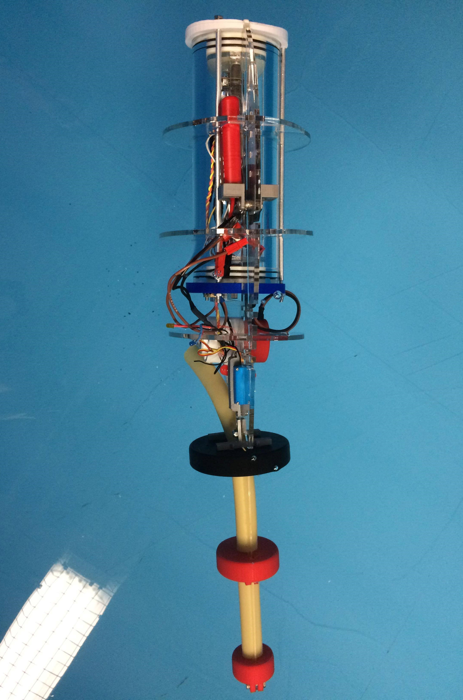
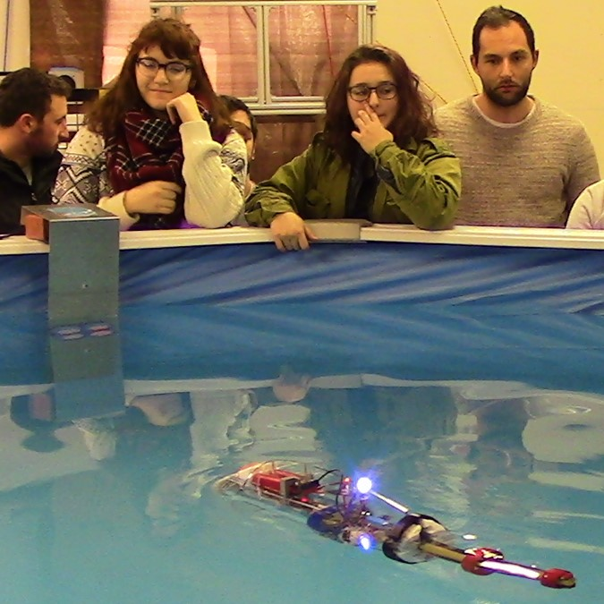
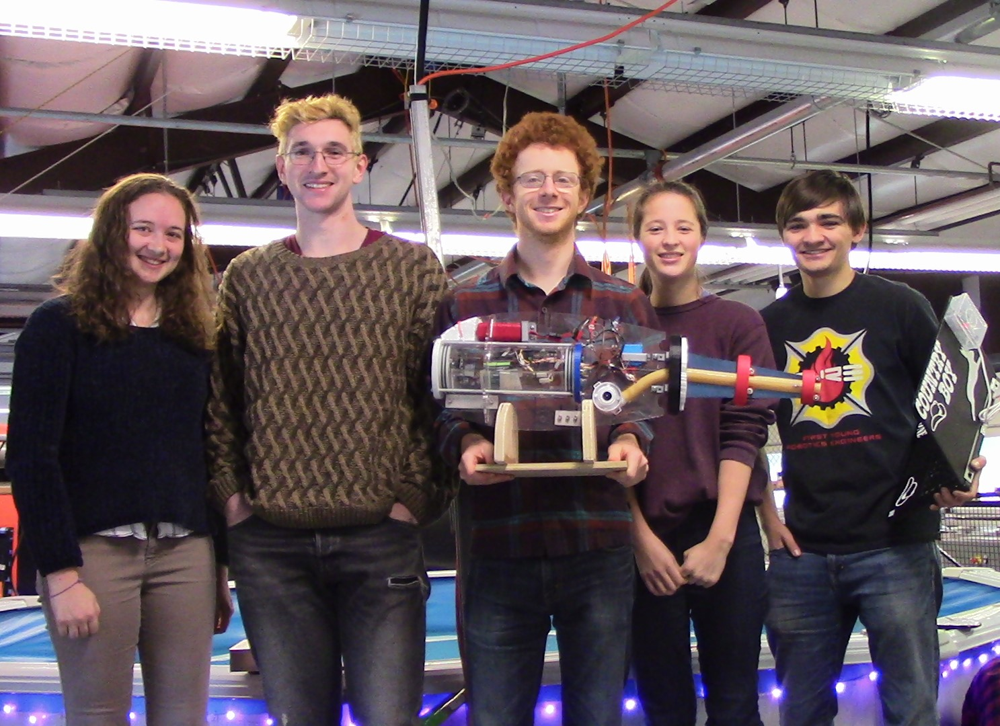

October-December 2017
Fundamentals of Robotics
For our final Fundamentals of Robotics class project, we worked in a team of five students from a variety of engineering majors to design, build, and test a bio-inspired robotic fish that would navigate the pool autonomously using colored lights along the walls of the pool. The system also had to meet certain criteria such as using a set of provided materials, allowing no more than one inch of the fish to be above the water, and having a blinking LED light to indicate status.
Within this project I worked on designing and contributing to the CAD model of the system and tracking part weights to help determine projected waterline, creating a removable mounting tray for electronics access, mounting batteries and servo motors, designing and testing a water-tight hull, designing a propulsion and steering mechanism (another student worked specifically on the tail piece design), overseeing the 3D-printing of several plates, tail pieces, mounting brackets, and exterior shell, and general physical assembly modifications and extensive testing support. The propulsion was driven by a bilge pump connected to a flexible rubber tube that would take in water from below and pump it out the back side of the fish. A servo head with attached strings pulled on either side of the fish tail like an underwater marionette to turn the end of the tube to direct the current flow and steer the system. Additionally, the batteries were mounted in such a position as determined by the center of mass of the system to allow the fish to float just under the surface of the water. Because we decided to pressurize our electronics hull (so that any potential leaks wouldn’t cause a rush of water in but instead a release of air due to the high internal pressure), I added 3D-printed plates with external tie rods to ensure the end caps were held firmly in place.
In the end our work payed off and our system was the only one within the class to successfully maintain a watertight hull, navigate the pool with its own propulsion and steering, and use the colored lights to determine when to turn to avoid hitting the wall and begin searching for the next light. One noticeable change in our final design is the lack of external shell. The underwater light detection was so finicky that the reflection from the colored shell was found to obscure the camera’s ability to reliably track the colored lights.
  